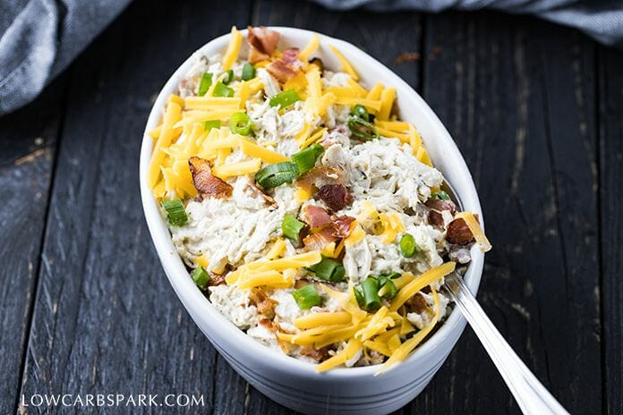

Keto Crack Chicken

What is Crack Chicken?
This crack chicken is the perfect combo of shredded chicken, cream cheese, cheddar cheese, bacon bits, and homemade keto ranch seasoning. It’s definitely an incredibly addictive meal and everyone keeps asking for more. You’ll end up easting the most cream, richest meal with tons of flavor in each bite.
Ingredients
- 4 Boneless Skinless Chicken Breasts (about 2 lbs)
- 1 cup chicken broth
- 8 oz cream cheese
- 1 cup shredded cheddar cheese
- 8 slices bacon
Keto Ranch Seasoning Ingredients
- 2 tsp dired parsely
- 1 tsp dired dill
- 1 tsp dired chives
- 2 tsp garlic powder
- 2 tsp onion powder
- 1/2 tsp salt
- 1/4 tsp pepper
- 1/2 tsp crush red pepper flakes (optional)
Instant Post Instructions
- Chop the bacon into small pieces. Set the instant pot to the saute mode. Add the bacon and cook until it starts to brown. Transfer the bacon to a plate, drain the fat and scrape any brown bits from the bottom of the pot. Press “Cancel” to stop the Saute Mode.
- Add the chicken breast, cream cheese, chicken broth, and all the ranch seasoning ingredients into the pot. Close the lid and pressure cook at High Pressure for 15 minutes, then 10 minutes Natural Release. Turn off the heat and release the remaining pressure. Open the lid.
- Transfer the chicken to a large bowl. Use two forks to shred the chicken. Return the chicken to the pot.
- Stir in the cheddar cheese and a third of the bacon pieces. Combine until the cheese is melted.
- Serve with keto buns, topped with extra bacon bits, cheese, and green onions.